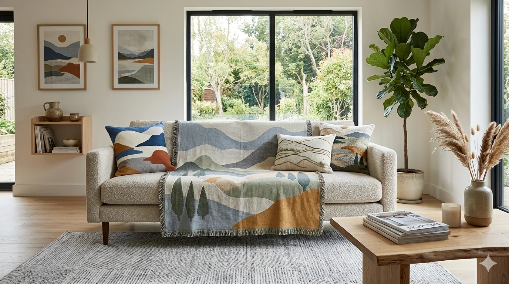

Loading...
Loading...

CORPORATE EVOLUTION
A progressive transformation from a regional sourcing intermediary into a globally structured textile supply chain organization, operating with governance, compliance discipline, and end-to-end operational control.
TajPak Group originated in Faisalabad in the early 2000s with a focused mandate: facilitating textile raw material sourcing for international buyers. Those early years were defined by market immersion, supplier connectivity, and building foundational trade execution capabilities within Pakistan's textile ecosystem.
By 2005, we had outgrown the transactional model. We introduced formalized quality management systems aligned with international standards. Internal processes were standardized, vendor evaluation mechanisms were strengthened, and compliance became a core operational principle — not a checkbox.
Today, TajPak Group operates as a multi-dimensional sourcing and supply chain partner — integrating procurement, production coordination, and quality assurance under one unified framework across home textiles (bedding, towels, curtains, throws, upholstery) and apparel (casual wear, activewear, knitwear, woven garments, basics).
We are anchored in transparency, traceability, and long-term commercial reliability across global textile and apparel markets.
We ensure consistency in export compliance, pricing discipline, and shipment reliability across multiple global markets. Every shipment is supported by critical documentation — BL (Bill of Lading), CRO (Certificate of Origin), commercial invoices, and export declarations — under FOB or CNF trade terms.
The result? Scalable, predictable cross-border commerce — with no regulatory surprises, no pricing volatility, and no logistics failures.
We manage vendor onboarding through rigorous audits — evaluating production capacity, quality history, compliance standards, and financial stability. Capacity alignment ensures the right factory is matched to your volume and timeline requirements. Production allocation follows a structured sourcing framework that prioritizes transparency, traceability, and continuity.
The result? Operational visibility, reduced supply chain risk, and uninterrupted flow of goods — even during market volatility.
DIFFERENCE
QUALITY COMMITMENT
At TajPak, quality is defined as a continuous discipline rather than a final checkpoint. Our approach is built on delivering consistent value through structured sourcing, verified supplier networks, and strict adherence to international compliance frameworks.
We ensure that every order is executed through reliable manufacturing partners, aligned with competitive pricing structures, and delivered within committed timelines without compromising on technical specifications or buyer requirements.
Our operational model is reinforced through continuous workforce training, process optimization, and system-level improvements that strengthen accountability, reduce variability, and enhance overall supply chain performance.
We remain committed to perpetual refinement of our quality management systems, ensuring alignment with evolving international standards, regulatory frameworks, and client-specific expectations across global markets.
ABOUT TAJPAK
TajPak is a professional textile sourcing and supply chain management company based in Faisalabad, Pakistan, serving international clients with end-to-end sourcing solutions.
TajPak is headquartered in Faisalabad, Pakistan — the textile hub of the country — allowing strong access to mills, manufacturers, and export facilities.
We provide textile sourcing, product development, vendor coordination, quality assurance, production monitoring, and global logistics support.
Yes, TajPak works with global brands and importers across Europe, North America, the Middle East, and Asia, ensuring reliable sourcing from Pakistan.
We follow structured quality control systems including raw material inspection, in-line production checks, and final pre-shipment evaluation.
Clients can contact us via our website or email. Our sourcing team will evaluate requirements and provide tailored solutions for their business needs.
Yes, TajPak works with global brands and importers across Europe, Middle East, and United States ensuring reliable sourcing from Pakistan.
Unlike traditional sourcing companies with rigid minimum order quantities (MOQs), TajPak
offers flexible
solutions tailored to your business stage — from as low as 300 units for market testing to
10,000+ units for
full-scale production.
We also provide shipment consolidation across home textiles and apparel, allowing clients to
combine
multiple products into a single shipment. This means one order, one freight cost, and a
significantly lower
landed cost per unit.
CALL TO ACTION
Connect with a trusted textile sourcing partner based in Faisalabad, Pakistan. We help global buyers streamline procurement, ensure strict quality control, and deliver reliable supply chain solutions across yarn, fabric, garments, and home textiles.
✔ 25+ Years of Industry Experience
✔ Certified Textile Sourcing Company in Pakistan
✔ Trusted by Global Buyers Worldwide